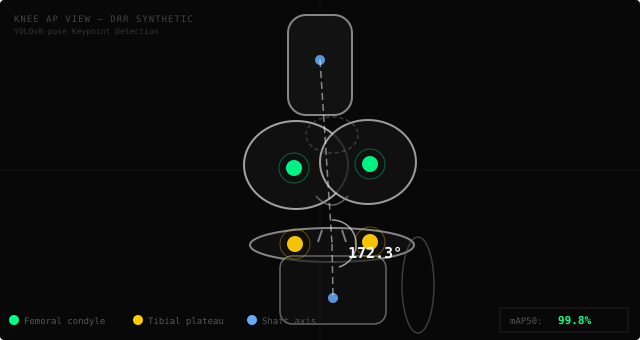
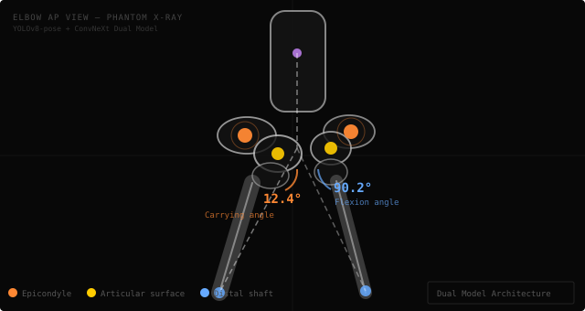
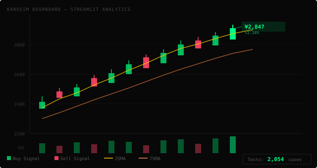
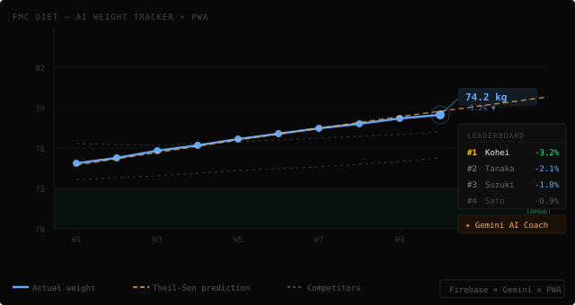
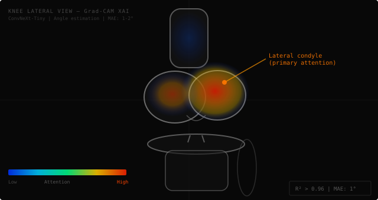

CLINICAL VISION
Combining clinical expertise as a radiologic technologist with cutting-edge deep learning.
Built an X-ray AI pipeline that trains without patient data — no ethics approval required.
Clinical Insight
meets
Deep Learning
National Hospital Organization
Fukuyama Medical Center
Dept. of Radiology
NHO Fukuyama Medical Center, Dept. of Radiology
TEL: 084-922-0001
An active clinical radiologic technologist developing original medical imaging AI from the frontlines.
Built a system combining YOLOv8-pose keypoint detection with geometric angle calculation to quantitatively assess X-ray positioning quality. Developed a unique pipeline for auto-generating synthetic DRR (pseudo X-ray) images — enabling model training with zero patient data and no ethics approval required.
My mission as an "engineer who knows the clinic" is to develop AI systems that are truly needed in real clinical environments.
OsteoVision
Required
Projects
Radiologic Tech
OsteoVision
Knee X-ray Positioning AI — AI-powered Knee X-ray Angle Estimation & QA System

Synthetic DRR (pseudo X-ray) images + YOLOv8-pose keypoint detection & angle measurement
Detects keypoints from knee X-ray images with YOLOv8-pose to automatically estimate joint angle and rotation. A system that provides quantitative positioning quality feedback.
- Auto DRR Generation720 training samples generated via OsteoSynth (no patient data)
- AccuracymAP50 = 99.8% (trained on 633 images)
- MPS InferenceApple Silicon optimized — 13.7ms / 73.2FPS real-time inference
- Statistical ValidationBland-Altman analysis for systematic bias & limits of agreement
- XAIGrad-CAM visualization of attention regions
- CI/CDGitHub Actions + Docker
ElbowVision
Elbow X-ray Positioning AI — AI Positioning Guidance for Elbow X-ray Imaging

Real phantom X-ray images + keypoint detection, carrying angle & flexion angle measurement
Estimates carrying angle and flexion angle from elbow X-ray images using AI, providing real-time positioning correction advice.
- Auto DRR GenerationCT→DRR synthesis pipeline auto-generates training data (no patient data)
- 6-Keypoint Detection6 anatomical landmarks of the elbow joint detected via YOLOv8-pose
- Dual ModelYOLOv8-pose (primary) + ConvNeXt (second opinion)
- Edge ValidationIndependent bone axis detection via Canny + HoughLinesP
kabu-sim
Stock Investment Simulator — Stock Investment Simulator & Analytics Platform

Streamlit dashboard — candlestick chart, moving averages & buy/sell signals
A large-scale stock investment simulation and analysis platform built on Streamlit, securely published via Cloudflare Tunnel.
- Large Codebase73,000+ lines of Python code
- Testing2,054 test cases ensuring quality
- UI65-page full-featured Streamlit UI
- DeploymentSecure external access via Cloudflare Tunnel
FMC Diet
Workplace Diet Battle PWA — AI-Powered Team Weight-Loss Competition App

Weight trend chart + Theil-Sen prediction + real-time leaderboard
A workplace diet battle PWA where teams compete on weight-change rate. Real-time sync via Firebase Firestore, with Gemini AI generating personalized coaching comments.
- AI Prediction EngineTheil-Sen estimation + BMI-adaptive damping for weight trend prediction
- Gemini AIPersonalized AI advice & chat based on individual progress
- Handicap SystemFair scoring that accounts for body type differences
- PWAOffline support via Service Worker, installable on mobile
- Real-timeLive leaderboard powered by Firebase Firestore
膝関節X線撮影における再撮影判断支援のための深層学習プログラムの開発
Deep Learning Program for Retake Decision Support in Knee X-ray Imaging

Grad-CAM visualization — attention focused on the lateral femoral condyle, matching experienced radiologic technologists
Automatic angle-deviation estimation in knee lateral X-rays using ConvNeXt-Tiny. Achieved R² > 0.96 and MAE ~1–2°. Grad-CAM confirmed attention on the lateral femoral condyle — consistent with experienced radiologic technologists. The predecessor to the current OsteoVision (YOLOv8-pose version).
膝関節X線撮影における再撮影判断支援のための深層学習プログラムの開発
Development of a Deep Learning Program for Retake Decision Support in Knee X-ray Imaging
AI / Deep Learning
- YOLOv8-pose
- ConvNeXt
- Grad-CAM / XAI
- PyTorch
- Google Colab
- Bland-Altman Analysis
Development
- FastAPI
- Next.js
- Docker
- GitHub Actions (CI/CD)
- Python / OpenCV
- Streamlit
- Firebase / Gemini API
Radiology
- X-ray Positioning QA
- DRR Synthesis (CT→X-ray)
- DICOM
- Phantom Study
- Geometric Angle Analysis
- Radiation Protection
Let's Connect
Open to inquiries about research collaborations, joint development, and employment opportunities.